Analiza rješenja · JOI Spring Camp 2018 · Dan 2
Najgori reporter 3
O ovom članku
Tekst je prijevod službene japanske prezentacije rješenja, preoblikovan u članak. Slajdovi su ugrađeni kao slike; natpis pod svakim slajdom je prijevod teksta na njemu. Dijelovi označeni kao trenerska napomena nisu u izvornoj prezentaciji — dodani su da popune korake koje slajdovi preskaču ili samo skiciraju.
Slajdovi
Uvod i zadatak
izvorni slajdovi 1–10
-
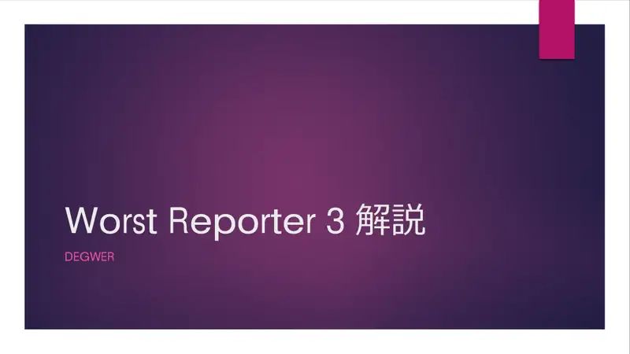
1Naslov; DEGWER. -
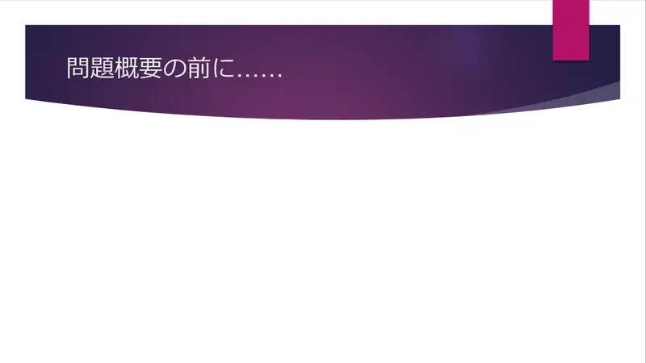
2Prije zadatka… -
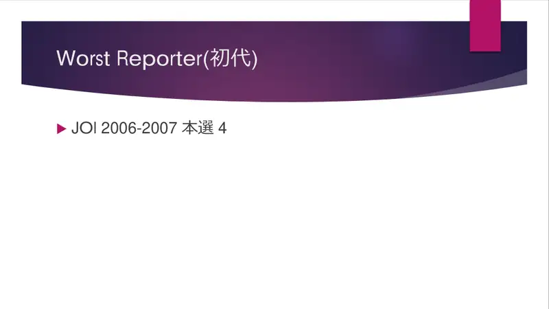
3Worst Reporter (2007 finale). -
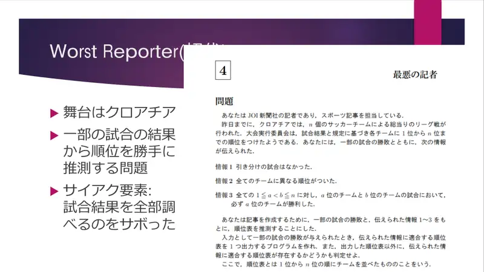
4Hrvatska; reporter koji nije provjerio sve rezultate. -
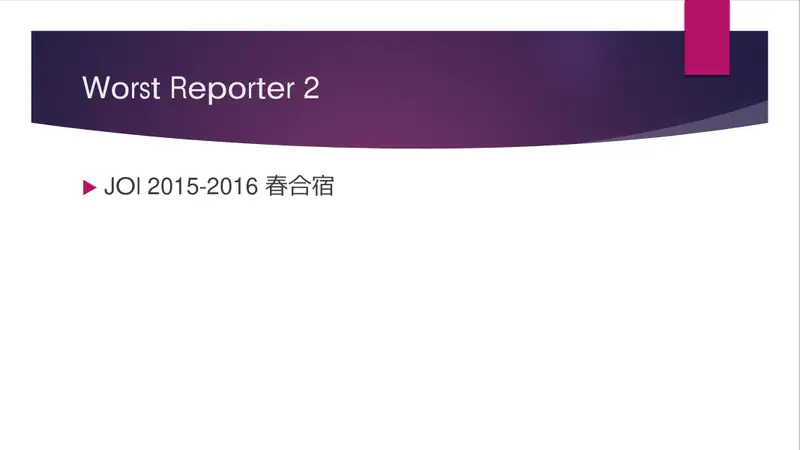
5Worst Reporter 2 (2016 kamp). -
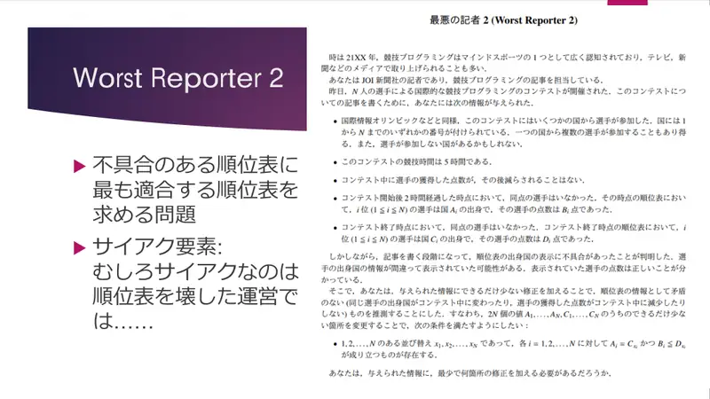
6Popravak pokvarene ljestvice. -
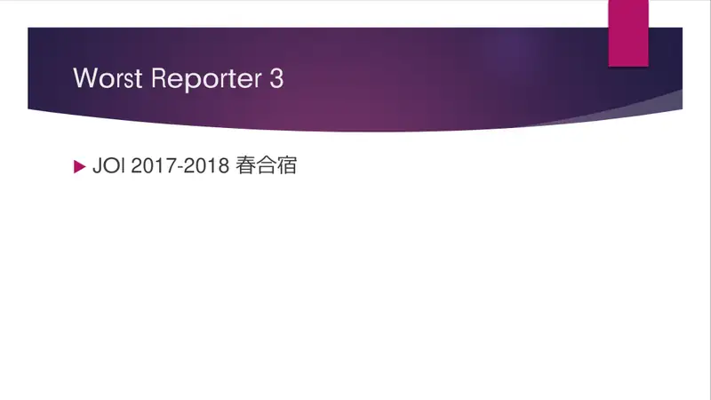
7Worst Reporter 3 (2018). -
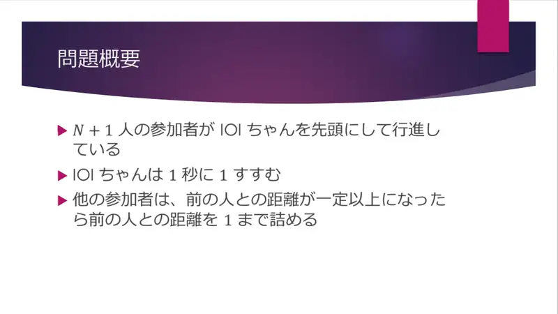
8Sažetak. -
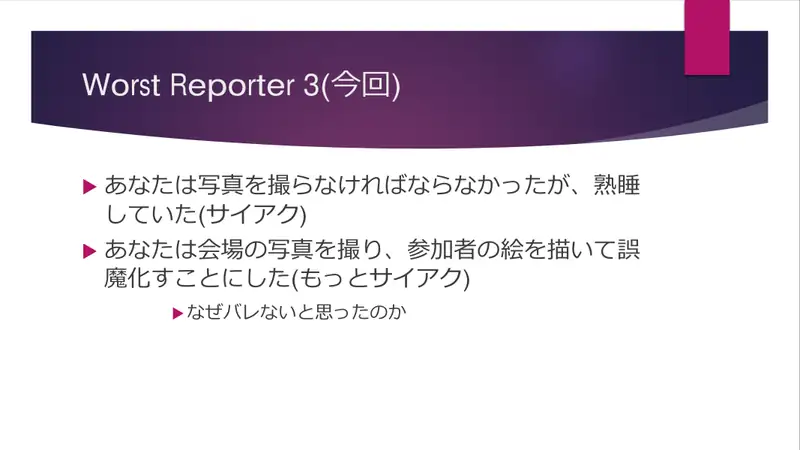
9Reporter je prespavao ceremoniju i crta sudionike na fotografije. -
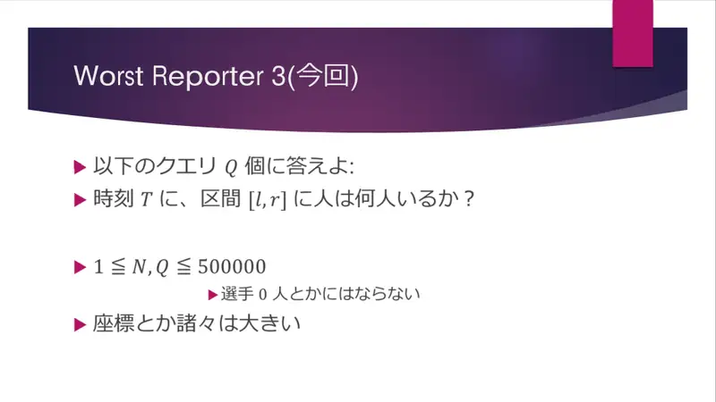
10Formalno.
← → tipke ili klik na sliku
Koraci algoritma
Primjer 1 — trenuci 0–6
izvorni slajdovi 11–17
-
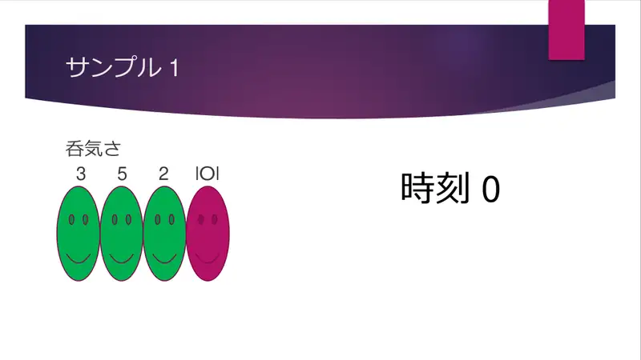
11Sporosti $2,5,3$; trenutak 0. -
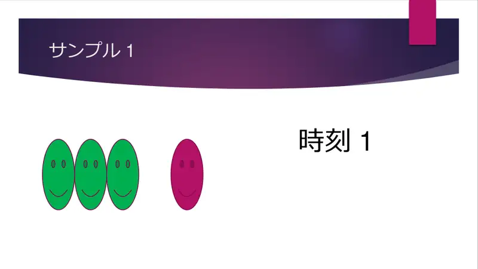
12Trenutak 1. -
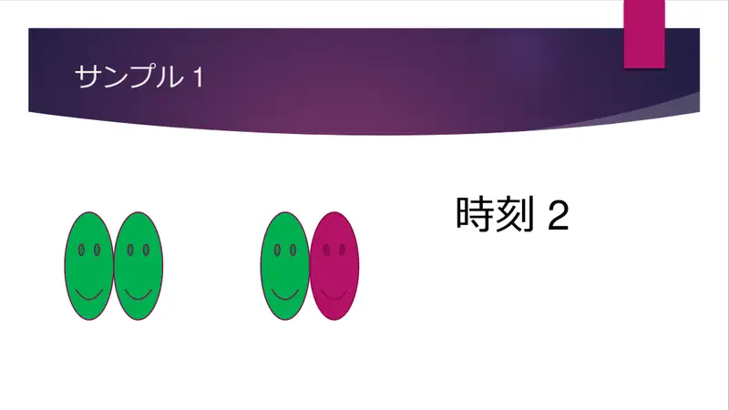
13Trenutak 2. -
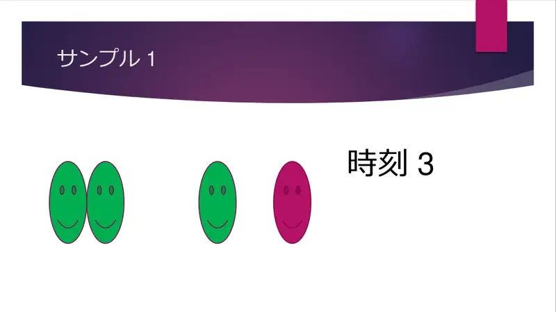
14Trenutak 3. -
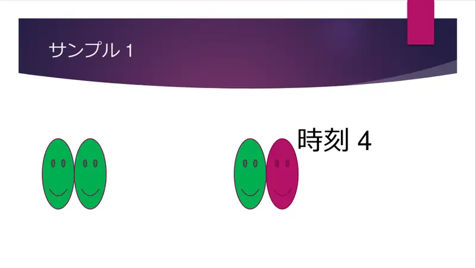
15Trenutak 4. -
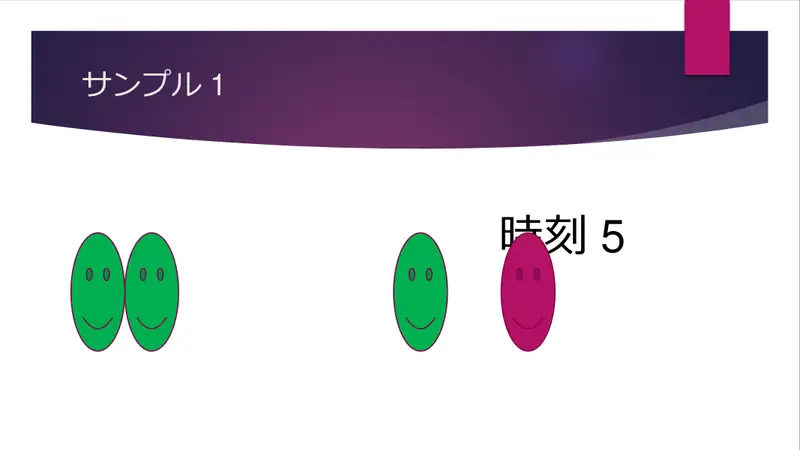
16Trenutak 5. -
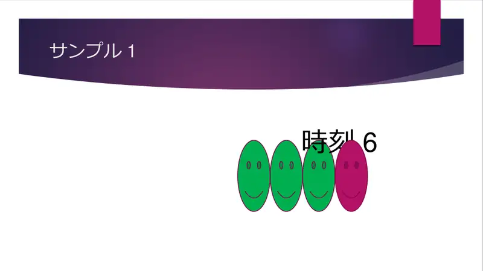
17Trenutak 6.
← → tipke ili klik na sliku
Podzadaci 1–2 19 bodova
Koraci algoritma
Posebni slučajevi i pomak
izvorni slajdovi 18–20
-
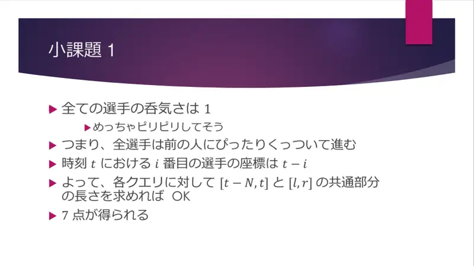
18$D_i=1$: svi se drže uz prednjeg; $i$-ti je na $t-i$; odgovor = duljina presjeka $[t-N,t]\cap[l,r]$. -
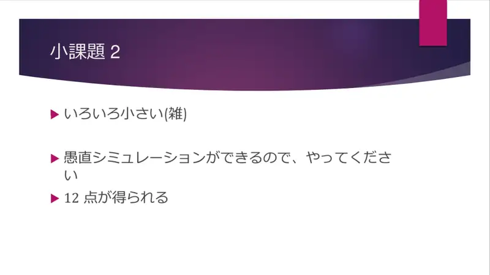
19Sve malo: simulacija; 12. -
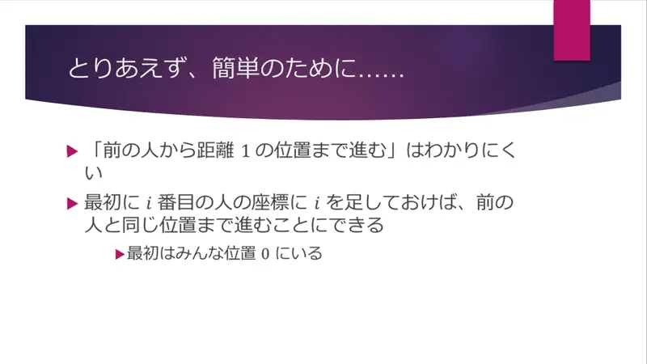
20Pojednostavljenje: dodaj $i$ koordinati $i$-tog — svi kreću iz 0 i „skaču na prednjeg”.
← → tipke ili klik na sliku
Puno rješenje 81 bod
Koraci algoritma
Periodi i grupe
izvorni slajdovi 21–26
-
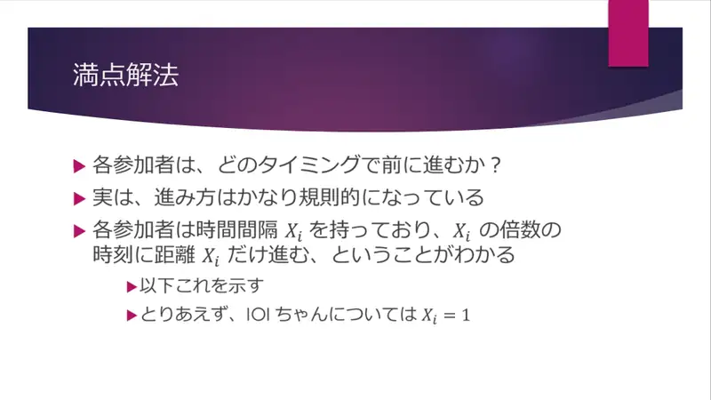
21Kad se tko miče? Vrlo pravilno: osoba $i$ ima period $X_i$ — u višekratnicima $X_i$ napreduje za $X_i$; IOI-chan $X_0=1$. -
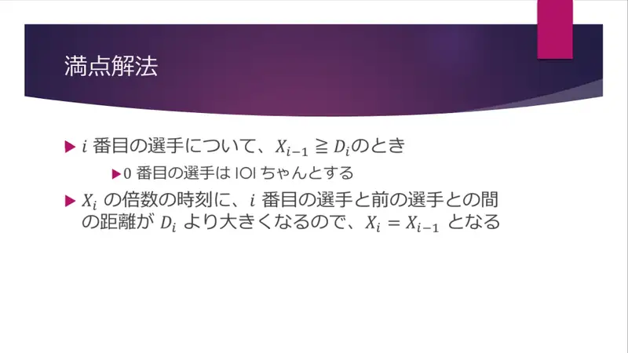
22$X_{i-1}\ge D_i$ ⇒ razmak nakon svakog skoka prednjeg $\gt D_i-1$ ⇒ $X_i=X_{i-1}$. -
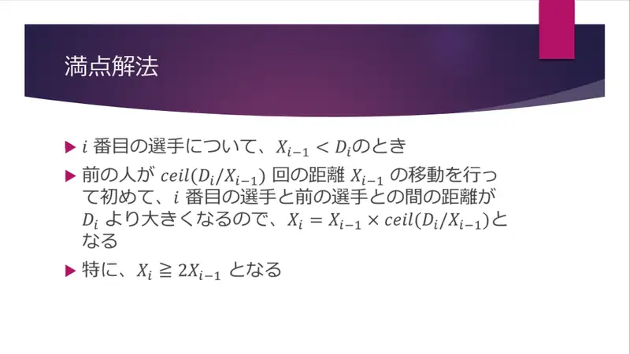
23$X_{i-1}\lt D_i$ ⇒ tek nakon $\lceil D_i/X_{i-1}\rceil$ skokova ⇒ $X_i=X_{i-1}\lceil D_i/X_{i-1}\rceil\ge2X_{i-1}$. -
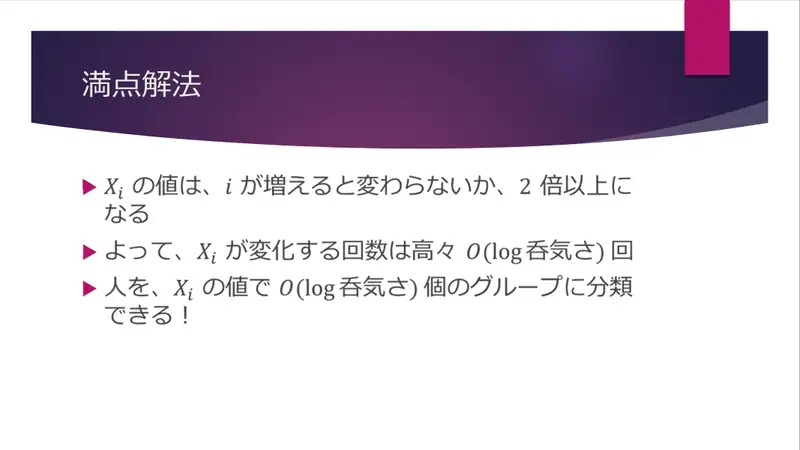
24$X_i$ se ne mijenja ili barem udvostruči ⇒ $O(\log D)$ promjena ⇒ $O(\log D)$ grupa. -

25Dalje kao podzadatak 1 po grupi: nakon vraćanja koordinata grupa zauzima uzastopni interval. -
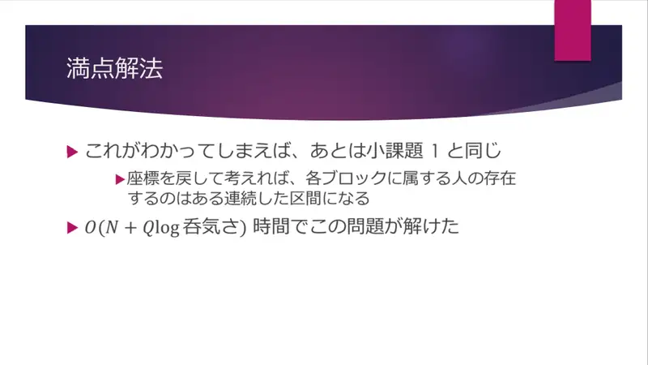
26$O(N+Q\log D)$.
← → tipke ili klik na sliku
Slajd
Statistika
izvorni slajd 27
-
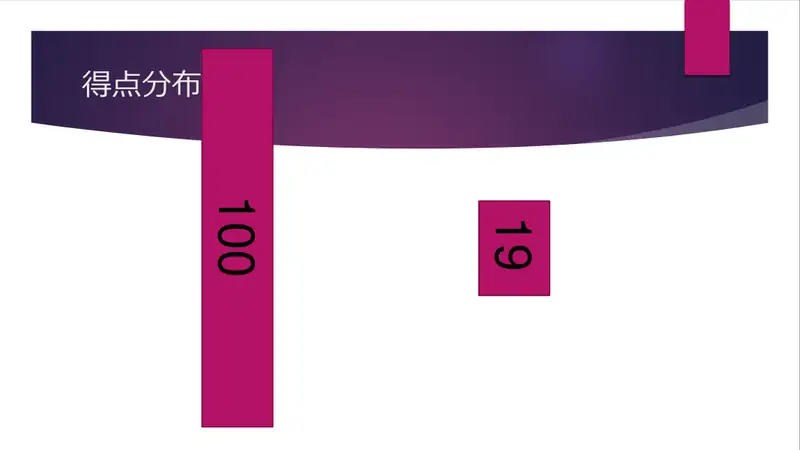
27100 / 19.
Sažetak
- Pomakni koordinate za $i$; kretanje je periodično s $X_i$.
- $X_i$ raste barem dvostruko pri promjeni ⇒ $\le31$ grupa, svaka zauzima interval.